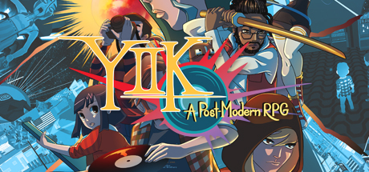

Indie Games
Many Indie (independant) developers were inspired by games such as Earthbound or other JRPGs, and therefore made games based on them.
Undertale / Deltarune

Lisa: The Painful

Hylics

YIIK: A Post Modern RPG
